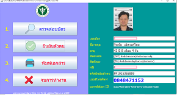
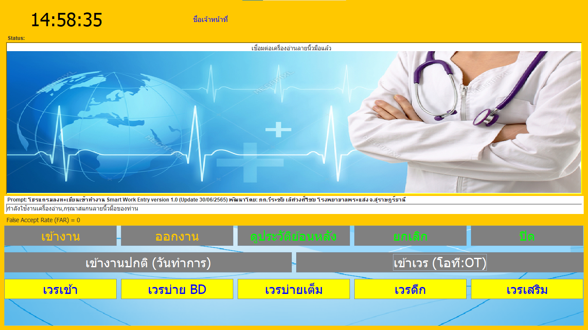
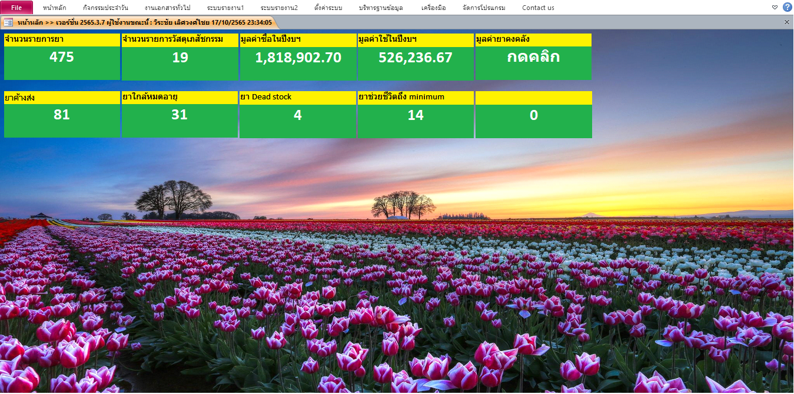
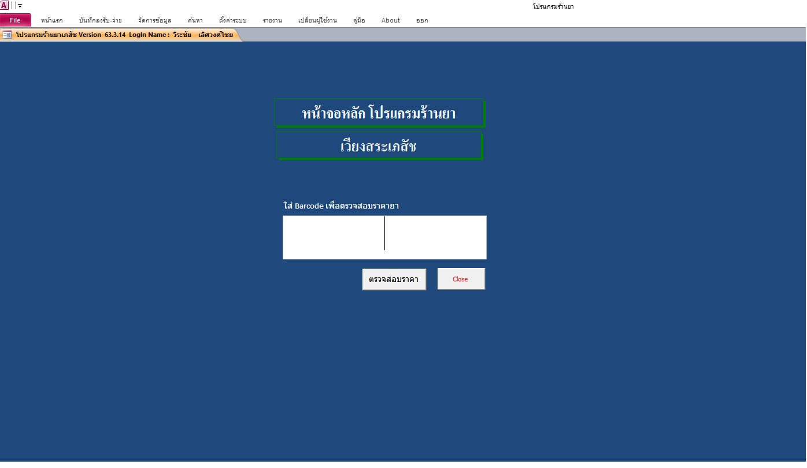
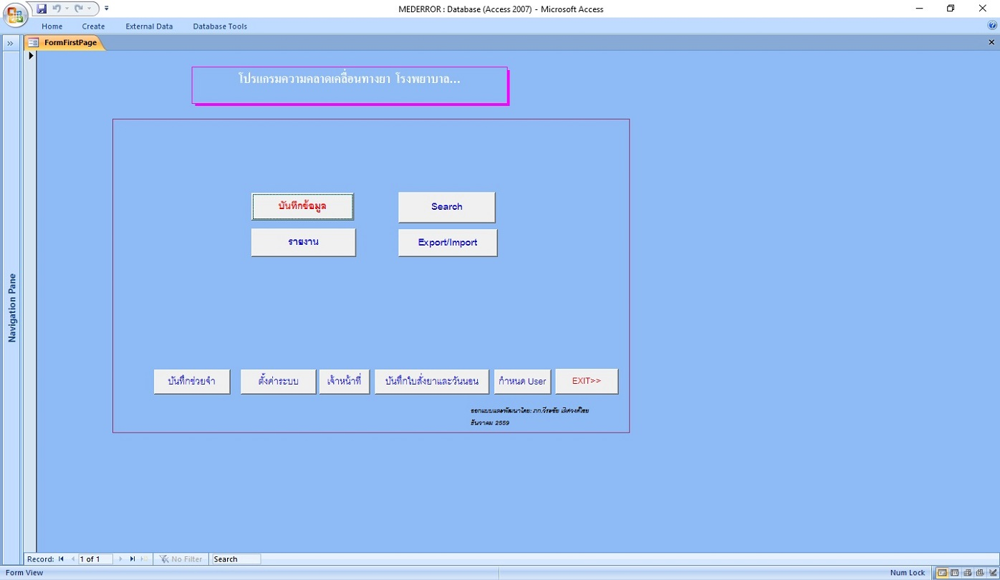
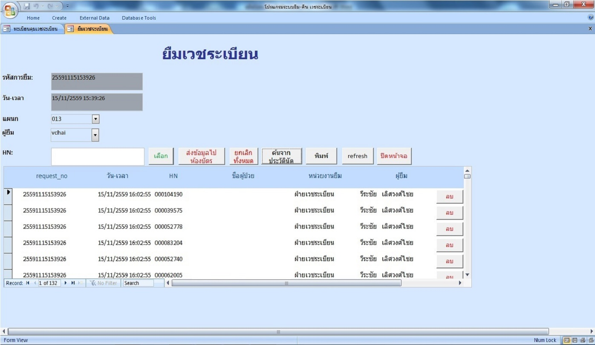
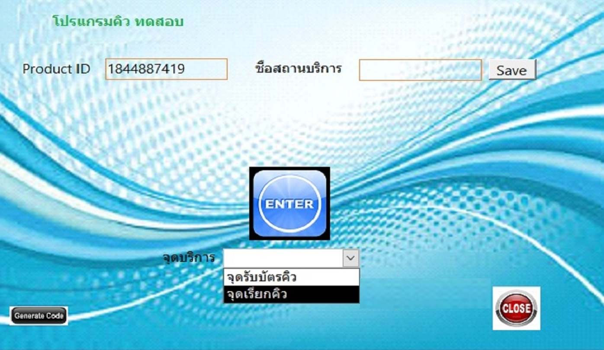

สินค้า |
เกี่ยวกับเรา |
ชื่อผลิตภัณฑ์ |
รายละเอียด |
Link |
|
|  | โปรแกรมยืนยันตัวตน สปสช. NHSO Authentication version.1.0 | เป็นโปรแกรมที่ใช้สำหรับการยืนยันตัวตน (Authentication) กับ สำนักงานหลักประกันสุขภาพแห่งชาติ (สปสช.) ด้วยบัตรประจำตัวประชาชน สามารถใช้อำนวยความสะดวก ในการรับบริการ ณ สถานบริการ เช่น คลินิก โรงพยาบาลเอกชน โรงพยาบาลของรัฐ โปรแกรมจะใช้คู่กับเครื่องอ่านบัตรประจำตัวประชาชน (Smart Card Reader) | |
|  | โปรแกรมสแกนเข้างาน version.1.0 | เป็นโปรแกรมที่ใช้สำหรับสแกนเข้าทำงาน โดยมีการบันทึกข้อมูลประเภทการเข้าทำงาน และเวลาเข้า-ออก พร้อมมีระบบรายงานอย่างละเอียด ติดตั้งบนเครื่องคอมคิวเตอร์ PC โปรแกรมจะใช้คู่กับเครื่องอ่านลายนิ้วมือ (Fingerprint Reader) | |
|  | โปรแกรมบริหารคลังเวชภัณฑ์ | เป็นโปรแกรมที่ใช้สำหรับสต๊อกคลังเวชภัณฑ์และสินค้า ครอบคลุมทั้งการสั่งซื้อ การรับ การจ่าย และระบบรายงานที่สำคัญ | |
|  |
โปรแกรมร้านยา EZDrug Update ล่าสุด!!... Full Version |
เป็นโปรแกรมสำหรับการขายหน้าร้าน หรือควบคุมสต๊อกยา สำหรับร้านขายยาทั่วไป | |
|
โปรแกรมร้านยา EZDrug Free trial Version |
เป็นโปรแกรมร้านร้านขายยา รุ่นทดลองใช้งานสามารถ download ใช้งานได้ฟรี |
||
|  | โปรแกรมความคลาดเคลื่อนทางยา EZME |
เป็นโปรแกรมฐานข้อมูลสำหรับบันทึก และประมวลผลเป็นรายงานความคลาดเคลื่อนทางยา เหมาะสำหรับงานเภสัชกรรมในโรงพยาบาลทั่วไป
|
|
|  | โปรแกรมบริหารการยืม-คืน เวชระเบียน EZMDR | เป็นโปรแกรมบริหารจัดการระบบการยืม-คืน เวชระเบียน สำหรับใช้ในโรงพยาบาล สามารถทำงานแบบเครือข่าย เชื่อมต่อกับฐานข้อมูลโปรแกรม Hosxp ศึกษารายละเอียดจากคู่มือการใช้งานโปรแกรม |
|
|  | โปรแกรมบริหารลำดับคิว EZQueue | เป็นโปรแกรมจัดลำดับคิวรับบริการ เพื่อให้ง่ายในการบริหารจัดการ สามารถทำงานได้ทั้งแบบคอมพิวเตอร์เครื่องเดียวและแบบเครือข่าย | |